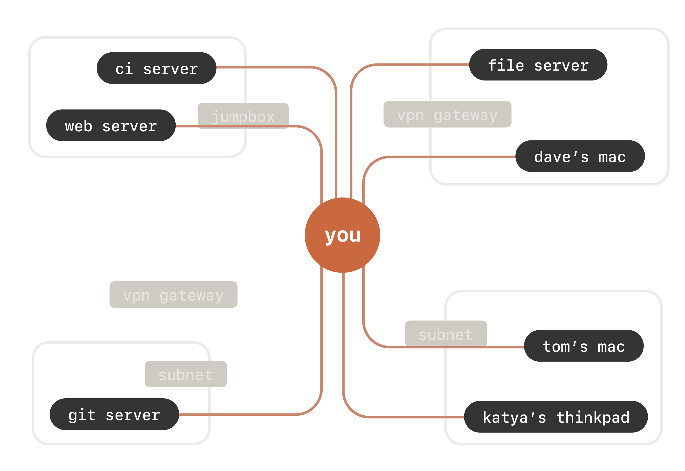
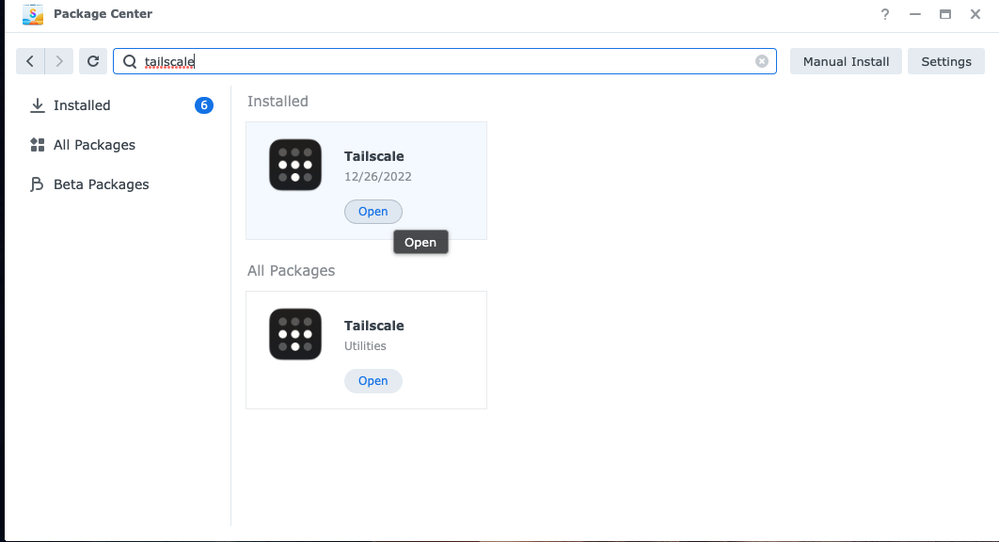
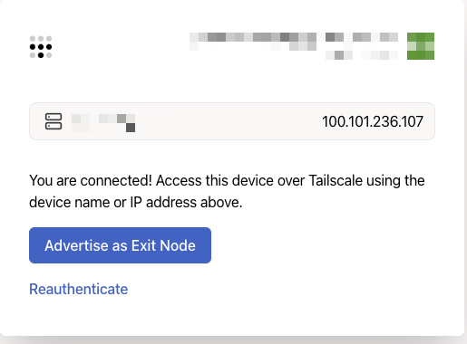
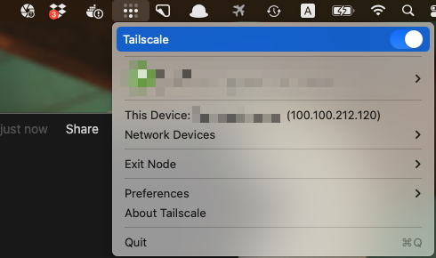
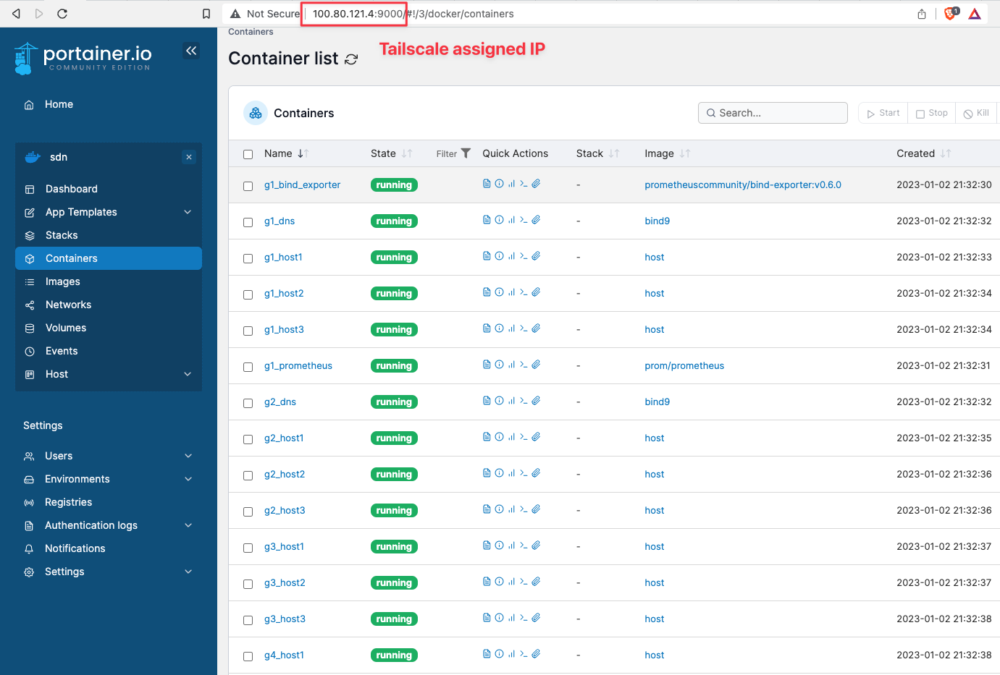

 <!DOCTYPE HTML>
<html>
<head><meta name="generator" content="Hexo 3.8.0">
  <meta charset="UTF-8">
  
    <title>Tailscale, 基於 WireGuard 的便利 VPN | Jordan&#39;s Notes</title>
    <meta name="viewport" content="width=device-width, initial-scale=1,user-scalable=no">
    
    <meta name="author" content="Jordan Huang">
    

    
    <meta name="description" content="終於終結需要開 linode, 設定 router port-forwarding, 學習 reverse ssh tunnel 與猶豫要不要付費買 ngork 的日子 XDD">
<meta name="keywords" content="cloud,Tailscale,networking,vpn,wireguard">
<meta property="og:type" content="article">
<meta property="og:title" content="Tailscale, 基於 WireGuard 的便利 VPN">
<meta property="og:url" content="http://jordanhuang.tw/2022/12/14/tailscale-基於WireGuard的便利VPN/index.html">
<meta property="og:site_name" content="Jordan&#39;s Notes">
<meta property="og:description" content="終於終結需要開 linode, 設定 router port-forwarding, 學習 reverse ssh tunnel 與猶豫要不要付費買 ngork 的日子 XDD">
<meta property="og:locale" content="default">
<meta property="og:image" content="http://jordanhuang.tw/2022/12/14/tailscale-基於WireGuard的便利VPN/tailscale-view.png">
<meta property="og:image" content="http://jordanhuang.tw/2022/12/14/tailscale-基於WireGuard的便利VPN/synology-package.png">
<meta property="og:image" content="http://jordanhuang.tw/2022/12/14/tailscale-基於WireGuard的便利VPN/auth.png">
<meta property="og:image" content="http://jordanhuang.tw/2022/12/14/tailscale-基於WireGuard的便利VPN/tailscale-toggle.png">
<meta property="og:image" content="http://jordanhuang.tw/2022/12/14/tailscale-基於WireGuard的便利VPN/portainer.png">
<meta property="og:updated_time" content="2023-02-11T07:32:17.102Z">
<meta name="twitter:card" content="summary">
<meta name="twitter:title" content="Tailscale, 基於 WireGuard 的便利 VPN">
<meta name="twitter:description" content="終於終結需要開 linode, 設定 router port-forwarding, 學習 reverse ssh tunnel 與猶豫要不要付費買 ngork 的日子 XDD">
<meta name="twitter:image" content="http://jordanhuang.tw/2022/12/14/tailscale-基於WireGuard的便利VPN/tailscale-view.png">

    
    <link rel="alternative" href="/atom.xml" title="Jordan&#39;s Notes" type="application/atom+xml">
    
    
    <link rel="icon" href="/img/favicon.ico">
    
    
    <link rel="apple-touch-icon" href="/img/jacman.jpg">
    <link rel="apple-touch-icon-precomposed" href="/img/jacman.jpg">
    
    <meta name="google-site-verification" content="x99kAHj-gCMS5M9ADRJOZwI_xsHXfgWfUpOcAhEivNk">
    <meta name="google-site-verification" content="x99kAHj-gCMS5M9ADRJOZwI_xsHXfgWfUpOcAhEivNk">
    <link rel="stylesheet" href="/css/style.css">
</head>
</html>
  <body>
    <header>
      
<div>
		
			<div id="imglogo">
				<a href="/"></a>
			</div>
			
			<div id="textlogo">
				<h1 class="site-name"><a href="/" title="Jordan&#39;s Notes">Jordan&#39;s Notes</a></h1>
				<h2 class="blog-motto"></h2>
			</div>
			<div class="navbar"><a class="navbutton navmobile" href="#" title="Menu">
			</a></div>
			<nav class="animated">
				<ul>
					<ul>
					 
						<li><a href="/">Home</a></li>
					
						<li><a href="/archives">Archives</a></li>
					
						<li><a href="/about">About</a></li>
					
					<li>
 					
					<form class="search" action="/search/index.html" method="get" accept-charset="utf-8">
						<label>Search</label>
						<input type="search" id="search" autocomplete="off" name="q" maxlength="20" placeholder="Search">
					</form>
					
					</li>
				</ul>
			</ul></nav>			
</div>
    </header>
    <div id="container">
      <div id="main" class="post" itemscope="" itemprop="blogPost">
  
	<article itemprop="articleBody"> 
		<script src="/js/jquery-2.0.3.min.js"></script>
<script src="https://www.gstatic.com/firebasejs/3.6.1/firebase.js"></script>
<script src="/js/custom.js"></script>

<header class="article-info clearfix">
  <h1 itemprop="name">
    
      <a href="/2022/12/14/tailscale-基於WireGuard的便利VPN/" title="Tailscale, 基於 WireGuard 的便利 VPN" itemprop="url">Tailscale, 基於 WireGuard 的便利 VPN</a>
  </h1>
  <p class="article-author">By
       
		<a href="/about" title="Jordan Huang" target="_blank" itemprop="author">Jordan Huang</a>
		
  </p><p class="article-time">
    <time datetime="2022-12-14T12:37:00.000Z" itemprop="datePublished"> Published 2022-12-14</time>
  </p>
  <p class="article-view-count">PageView
    <font class="count"><font></font>
  </font></p>
</header>
	<div class="article-content">
		
		<div id="toc" class="toc-article">
			<strong class="toc-title">Contents</strong>
		
			<ol class="toc"><li class="toc-item toc-level-2"><a class="toc-link" href="#Tailscale-是什麼"><span class="toc-number">1.</span> <span class="toc-text">Tailscale 是什麼</span></a></li><li class="toc-item toc-level-2"><a class="toc-link" href="#使用步驟"><span class="toc-number">2.</span> <span class="toc-text">使用步驟</span></a></li><li class="toc-item toc-level-2"><a class="toc-link" href="#適用情境"><span class="toc-number">3.</span> <span class="toc-text">適用情境</span></a><ol class="toc-child"><li class="toc-item toc-level-3"><a class="toc-link" href="#Portainer"><span class="toc-number">3.1.</span> <span class="toc-text">Portainer</span></a></li></ol></li></ol>
		
		</div>
		
		<p>終於終結需要開 linode, 設定 router port-forwarding, 學習 reverse ssh tunnel 與猶豫要不要付費買 ngork 的日子 XDD<br><a id="more"></a></p>
<h2 id="Tailscale-是什麼"><a href="#Tailscale-是什麼" class="headerlink" title="Tailscale 是什麼"></a>Tailscale 是什麼</h2><p>能將你所有的裝置加入同一個網段，彼此可以互相連通。</p>
<p>在過去讓裝置可在網際網路上被存取，會需要有台 public 的跳板機或是 router, 並透過 port-forwarding 或是 reverse ssh tunnel 的方式才可讓機器互相連通。而且每個 port 都需要設定，挺麻煩的。<br></p>
<h2 id="使用步驟"><a href="#使用步驟" class="headerlink" title="使用步驟"></a>使用步驟</h2><p>首先在 <a href="https://tailscale.com" target="_blank" rel="noopener">官網</a> 上註冊帳號</p>
<p>在 *nix 系統上可夠過指令快速安裝: <code>curl -fsSL [https://tailscale.com/install.sh](https://tailscale.com/install.sh) | sh</code><br>安裝好後下 <code>tailscale up</code> 啟動 tailscale daemon<br>接著就可以取得 <code>tailscale ip -4</code> 取得 tailscale 分配給你的內網 ip<br>若有用 群暉(Synology) NAS 的朋友，在 Package Center 上也有對應的套件可以安裝<br></p>
<p>安裝好後點開，就會跳出 authentication 視窗，透過 OAuth 即可完成認證。<br></p>
<h2 id="適用情境"><a href="#適用情境" class="headerlink" title="適用情境"></a>適用情境</h2><h3 id="Portainer"><a href="#Portainer" class="headerlink" title="Portainer"></a>Portainer</h3><p>最近有個專案需要在 Proxmox VE 上的 VM 啟動多達 20 幾台的 docker container, 過程中需要一直查看 container logs。為求方便，我使用 Portainer  來取代繁雜的 docker 指令。</p>
<p>若沒有 tailscale 會需要對 portainer server 在 router 上做 port-forwarding, 而我所要監測的 VM 上也需要做一次才可使用 portainer agent。現在我只要開啟 tailscale 就可連接，極度方便。<br><br></p>
  
	</div>
		<footer class="article-footer clearfix">
<div class="article-catetags">


  <div class="article-tags">
  
  <span></span> <a href="/tags/cloud/">cloud</a><a href="/tags/Tailscale/">Tailscale</a><a href="/tags/networking/">networking</a><a href="/tags/vpn/">vpn</a><a href="/tags/wireguard/">wireguard</a>
  </div>

</div>


</footer>

   	       
	</article>
	
<nav class="article-nav clearfix">
 

<div class="next">
<a href="/2021/08/17/minio-backup/" title="Minio 備份筆記">
 <span>Minio 備份筆記
</span>
</a>
</div>

</nav>

	

<section id="comments" class="comment">
  <div id="disqus_thread">
    <noscript>Please enable JavaScript to view the <a href="//disqus.com/?ref_noscript">comments powered by Disqus.</a></noscript>
  </div>
</section>

</div>  
      <div class="openaside"><a class="navbutton" href="#" title="Show Sidebar"></a></div>

  <div id="toc" class="toc-aside">
  <strong class="toc-title">Contents</strong>
 
 <ol class="toc"><li class="toc-item toc-level-2"><a class="toc-link" href="#Tailscale-是什麼"><span class="toc-number">1.</span> <span class="toc-text">Tailscale 是什麼</span></a></li><li class="toc-item toc-level-2"><a class="toc-link" href="#使用步驟"><span class="toc-number">2.</span> <span class="toc-text">使用步驟</span></a></li><li class="toc-item toc-level-2"><a class="toc-link" href="#適用情境"><span class="toc-number">3.</span> <span class="toc-text">適用情境</span></a><ol class="toc-child"><li class="toc-item toc-level-3"><a class="toc-link" href="#Portainer"><span class="toc-number">3.1.</span> <span class="toc-text">Portainer</span></a></li></ol></li></ol>
 
  </div>

<div id="asidepart">
<div class="closeaside"><a class="closebutton" href="#" title="Hide Sidebar"></a></div>
<aside class="clearfix">
<div id="authorInfo">
	
		<div class="author-img"></div>		
	
	<div class="social-info">
		
		
		<a href="https://github.com/good5dog5" target="_blank" class="icon-github" title="github"></a>
		
		
		
		
		
		
		
		
		
		
		<a href="mailto:good5dog5@gmail.com" target="_blank" class="icon-email" title="Email Me"></a>
		

	</div>
</div>

  
<div class="github-card">
<p class="asidetitle">Github Card</p>
<div class="github-card" data-github="good5dog5" data-width="220" data-height="119" data-theme="medium">
<script type="text/javascript" src="//cdn.jsdelivr.net/github-cards/latest/widget.js"></script>
</div>
  </div>


  
<div class="categorieslist">
	<p class="asidetitle">Categories</p>
		<ul>
		
		  
			<li><a href="/categories/Blog/" title="Blog">Blog<sup>1</sup></a></li>
		  
		
		  
			<li><a href="/categories/C/" title="C">C<sup>1</sup></a></li>
		  
		
		  
			<li><a href="/categories/CLI/" title="CLI">CLI<sup>1</sup></a></li>
		  
		
		  
			<li><a href="/categories/Homework/" title="Homework">Homework<sup>2</sup></a></li>
		  
		
		  
			<li><a href="/categories/Job/" title="Job">Job<sup>2</sup></a></li>
		  
		
		  
			<li><a href="/categories/Linux/" title="Linux">Linux<sup>2</sup></a></li>
		  
		
		  
			<li><a href="/categories/Note/" title="Note">Note<sup>1</sup></a></li>
		  
		
		  
			<li><a href="/categories/Tools/" title="Tools">Tools<sup>2</sup></a></li>
		  
		
		  
			<li><a href="/categories/Work/" title="Work">Work<sup>1</sup></a></li>
		  
		
		  
			<li><a href="/categories/daily/" title="daily">daily<sup>1</sup></a></li>
		  
		
		</ul>
</div>


  
<div class="tagslist">
	<p class="asidetitle">Tags</p>
		<ul class="clearfix">
		
			
				<li><a href="/tags/Note/" title="Note">Note<sup>11</sup></a></li>
			
		
			
				<li><a href="/tags/Linux/" title="Linux">Linux<sup>7</sup></a></li>
			
		
			
				<li><a href="/tags/embedded-system/" title="embedded system">embedded system<sup>4</sup></a></li>
			
		
			
				<li><a href="/tags/python/" title="python">python<sup>3</sup></a></li>
			
		
			
				<li><a href="/tags/Job/" title="Job">Job<sup>3</sup></a></li>
			
		
			
				<li><a href="/tags/c/" title="c">c<sup>3</sup></a></li>
			
		
			
				<li><a href="/tags/C/" title="C">C<sup>3</sup></a></li>
			
		
			
				<li><a href="/tags/note/" title="note">note<sup>3</sup></a></li>
			
		
			
				<li><a href="/tags/書摘/" title="書摘">書摘<sup>3</sup></a></li>
			
		
			
				<li><a href="/tags/心得/" title="心得">心得<sup>3</sup></a></li>
			
		
			
				<li><a href="/tags/hack/" title="hack">hack<sup>2</sup></a></li>
			
		
			
				<li><a href="/tags/Python/" title="Python">Python<sup>2</sup></a></li>
			
		
			
				<li><a href="/tags/i3-wm/" title="i3 wm">i3 wm<sup>2</sup></a></li>
			
		
			
				<li><a href="/tags/apt-get/" title="apt-get">apt-get<sup>2</sup></a></li>
			
		
			
				<li><a href="/tags/Resume/" title="Resume">Resume<sup>2</sup></a></li>
			
		
			
				<li><a href="/tags/Preprocessor/" title="Preprocessor">Preprocessor<sup>2</sup></a></li>
			
		
			
				<li><a href="/tags/pandas/" title="pandas">pandas<sup>2</sup></a></li>
			
		
			
				<li><a href="/tags/Blog/" title="Blog">Blog<sup>2</sup></a></li>
			
		
			
				<li><a href="/tags/CLI/" title="CLI">CLI<sup>2</sup></a></li>
			
		
			
				<li><a href="/tags/gdb/" title="gdb">gdb<sup>2</sup></a></li>
			
		
		</ul>
</div>


  <div class="linkslist">
  <p class="asidetitle">Links</p>
    <ul>
        
    </ul>
</div>

  


  <div class="rsspart">
	<a href="/atom.xml" target="_blank" title="rss">RSS</a>
</div>

</aside>
</div>
    </div>
    <footer><div id="footer">
		
		

		<p class="copyright">
		Powered by <a href="http://hexo.io" target="_blank" title="hexo">hexo</a> and Theme by <a href="https://github.com/wuchong/jacman" target="_blank" title="Jacman">Jacman</a> © 2023 
		
		<a href="/about" target="_blank" title="Jordan Huang">Jordan Huang</a>
		
		
		</p>
</div>
<!-- <span id="visits">Visits: <font class="count">--<font></span>
<!-- <span id="pageviews">Pageviews: <font class="count">--<font></span> --> -->

</footer>
    <script src="/js/jquery-2.0.3.min.js"></script>
<script src="/js/jquery.imagesloaded.min.js"></script>
<script src="/js/gallery.js"></script>
<script src="/js/jquery.qrcode-0.12.0.min.js"></script>

<script type="text/javascript">
$(document).ready(function(){ 
  $('.navbar').click(function(){
    $('header nav').toggleClass('shownav');
  });
  var myWidth = 0;
  function getSize(){
    if( typeof( window.innerWidth ) == 'number' ) {
      myWidth = window.innerWidth;
    } else if( document.documentElement && document.documentElement.clientWidth) {
      myWidth = document.documentElement.clientWidth;
    };
  };
  var m = $('#main'),
      a = $('#asidepart'),
      c = $('.closeaside'),
      o = $('.openaside');
  c.click(function(){
    a.addClass('fadeOut').css('display', 'none');
    o.css('display', 'block').addClass('fadeIn');
    m.addClass('moveMain');
  });
  o.click(function(){
    o.css('display', 'none').removeClass('beforeFadeIn');
    a.css('display', 'block').removeClass('fadeOut').addClass('fadeIn');      
    m.removeClass('moveMain');
  });
  $(window).scroll(function(){
    o.css("top",Math.max(80,260-$(this).scrollTop()));
  });
  
        getSize();
        if (myWidth >= 1024) {
          c.click();
        }
  
  $(window).resize(function(){
    getSize(); 
    if (myWidth >= 1024) {
      $('header nav').removeClass('shownav');
    }else{
      m.removeClass('moveMain');
      a.css('display', 'block').removeClass('fadeOut');
      o.css('display', 'none');
      
      $('#toc.toc-aside').css('display', 'none');
        
    }
  });
});
</script>

<script type="text/javascript">
$(document).ready(function(){ 
  var ai = $('.article-content>iframe'),
      ae = $('.article-content>embed'),
      t  = $('#toc'),
      ta = $('#toc.toc-aside'),
      o  = $('.openaside'),
      c  = $('.closeaside');
  if(ai.length>0){
    ai.wrap('<div class="video-container" />');
  };
  if(ae.length>0){
   ae.wrap('<div class="video-container" />');
  };
  c.click(function(){
    ta.css('display', 'block').addClass('fadeIn');
  });
  o.click(function(){
    ta.css('display', 'none');
  });
  $(window).scroll(function(){
    ta.css("top",Math.max(140,320-$(this).scrollTop()));
  });
});
</script>


<script type="text/javascript">
$(document).ready(function(){ 
  var $this = $('.share'),
      url = $this.attr('data-url'),
      encodedUrl = encodeURIComponent(url),
      title = $this.attr('data-title'),
      tsina = $this.attr('data-tsina'),
      description = $this.attr('description');
  var html = [
  '<div class="hoverqrcode clearfix"></div>',
  '<a class="overlay" id="qrcode"></a>',
  '<a href="https://www.facebook.com/sharer.php?u=' + encodedUrl + '" class="article-share-facebook" target="_blank" title="Facebook"></a>',
  '<a href="https://twitter.com/intent/tweet?url=' + encodedUrl + '" class="article-share-twitter" target="_blank" title="Twitter"></a>',
  '<a href="#qrcode" class="article-share-qrcode" title="微信"></a>',
  '<a href="http://widget.renren.com/dialog/share?resourceUrl=' + encodedUrl + '&srcUrl=' + encodedUrl + '&title=' + title +'" class="article-share-renren" target="_blank" title="人人"></a>',
  '<a href="http://service.weibo.com/share/share.php?title='+title+'&url='+encodedUrl +'&ralateUid='+ tsina +'&searchPic=true&style=number' +'" class="article-share-weibo" target="_blank" title="微博"></a>',
  '<span title="Share to"></span>'
  ].join('');
  $this.append(html);

  $('.hoverqrcode').hide();

  var myWidth = 0;
  function updatehoverqrcode(){
    if( typeof( window.innerWidth ) == 'number' ) {
      myWidth = window.innerWidth;
    } else if( document.documentElement && document.documentElement.clientWidth) {
      myWidth = document.documentElement.clientWidth;
    };
    var qrsize = myWidth > 1024 ? 200:100;
    var options = {render: 'image', size: qrsize, fill: '#2ca6cb', text: url, radius: 0.5, quiet: 1};
    var p = $('.article-share-qrcode').position();
    $('.hoverqrcode').empty().css('width', qrsize).css('height', qrsize)
                          .css('left', p.left-qrsize/2+20).css('top', p.top-qrsize-10)
                          .qrcode(options);
  };
  $(window).resize(function(){
    $('.hoverqrcode').hide();
  });
  $('.article-share-qrcode').click(function(){
    updatehoverqrcode();
    $('.hoverqrcode').toggle();
  });
  $('.article-share-qrcode').hover(function(){}, function(){
      $('.hoverqrcode').hide();
  });
});   
</script>


<script type="text/javascript">

var disqus_shortname = 'good5dog5';

(function(){
  var dsq = document.createElement('script');
  dsq.type = 'text/javascript';
  dsq.async = true;
  dsq.src = '//' + disqus_shortname + '.disqus.com/embed.js';
  (document.getElementsByTagName('head')[0] || document.getElementsByTagName('body')[0]).appendChild(dsq);
}());
(function(){
  var dsq = document.createElement('script');
  dsq.type = 'text/javascript';
  dsq.async = true;
  dsq.src = '//' + disqus_shortname + '.disqus.com/count.js';
  (document.getElementsByTagName('head')[0] || document.getElementsByTagName('body')[0]).appendChild(dsq);
}());
</script>


<link rel="stylesheet" href="/fancybox/jquery.fancybox.css" media="screen" type="text/css">
<script src="/fancybox/jquery.fancybox.pack.js"></script>
<script type="text/javascript">
$(document).ready(function(){ 
  $('.article-content').each(function(i){
    $(this).find('img').each(function(){
      if ($(this).parent().hasClass('fancybox')) return;
      var alt = this.alt;
      if (alt) $(this).after('<span class="caption">' + alt + '</span>');
      $(this).wrap('<a href="' + this.src + '" title="' + alt + '" class="fancybox"></a>');
    });
    $(this).find('.fancybox').each(function(){
      $(this).attr('rel', 'article' + i);
    });
  });
  if($.fancybox){
    $('.fancybox').fancybox();
  }
}); 
</script>


<!-- Analytics Begin -->

<script type="text/javascript">
(function(i,s,o,g,r,a,m){i['GoogleAnalyticsObject']=r;i[r]=i[r]||function(){
  (i[r].q=i[r].q||[]).push(arguments)},i[r].l=1*new Date();a=s.createElement(o),
  m=s.getElementsByTagName(o)[0];a.async=1;a.src=g;m.parentNode.insertBefore(a,m)
})(window,document,'script','//www.google-analytics.com/analytics.js','ga');
ga('create', 'UA-44033199-1', 'good5dog5.github.io/');  
ga('send', 'pageview');
</script>


<script>
var _hmt = _hmt || [];
(function() {
  var hm = document.createElement("script");
  hm.src = "//hm.baidu.com/hm.js?e6d1f421bbc9962127a50488f9ed37d1";
  var s = document.getElementsByTagName("script")[0]; 
  s.parentNode.insertBefore(hm, s);
})();
</script>


<!-- Analytics End -->

<!-- Totop Begin -->

	<div id="totop">
	<a title="Back to Top"></a>
	</div>
	<script src="/js/totop.js"></script>

<!-- Totop End -->

<!-- MathJax Begin -->
<!-- mathjax config similar to math.stackexchange -->


<!-- MathJax End -->

<!-- Tiny_search Begin -->

<!-- Tiny_search End -->
<!-- Google tag (gtag.js) -->
<script async src="https://www.googletagmanager.com/gtag/js?id=UA-44033199-1"></script>
<script>
  window.dataLayer = window.dataLayer || [];
  function gtag(){dataLayer.push(arguments);}
  gtag('js', new Date());

  gtag('config', 'UA-44033199-1');
</script>
  </body>
</html>
